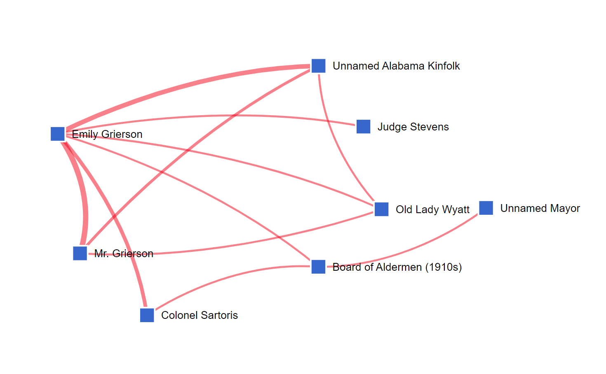

Preface
This lesson is part of the Gender and Modernization cluster in the Teaching and Learning section. It examines how technological, economic, and social changes in the William Faulkner's American South shaped gender roles.
The lesson on "A Rose for Emily" can be paired with that on "Elly" specifically. Both of these stories feature women who are outcast from the town of Jefferson because they challenge traditional gender roles. In the case of "A Rose for Emily", her ostracism is the result of changing social pressures. As part of the elite before the Civil War, she cannot find a suitable partner after the war ends. When she finally does meet someone, Homer Barron, the town does not approve because it would go against her dead father's wishes.
This lesson plan makes use of the following DY tools:
After this lesson, students will get a better understanding of Emily's ghastly rejection of social norms, and perhaps feel some sympathy for her tragic situation.
Tip
This module can be taught by itself or in conjunction with any stories that are part of the Faulkner and modernization cluster:
Activities
1. Plotting the Story
Discuss: "A Rose for Emily"
Responding to a question about "A Rose for Emily", Faulkner described the story as follows: "Oh, it's simply the poor woman had had no life at all. Her father had kept her more or less locked up, and then she had a lover, and he was about to quit her. She had to murder him."
Faulkner's outline only tells part of the story, and much of it revolves around the fact that gender norms change radically after the Civil War and Emily is not able to secure a husband. To understand this shift, it is important to understand the social changes that happen because of the War.
- Given their social prominence before the Civil War, how might the Grierson family have made their money before the Civil War?
- Why does Emily's father not think anyone is "good enough" for her?
- Why is Emily not able to marry anyone after the Civil War? How does her status as member of the old Southern aristocracy affect this?
- Why might it have been against the town's sense of propriety for Emily to have a relationship with Homer Barron?
- How might Emily's impossible position of not finding a suitable partner because of social norms affect her actions and mental state?
Allow students to share their responses and note patterns in what aspects of the story they found most compelling or disturbing.
2. Gender and Mobility
Explore: "A Rose for Emily" (Main Map - Events)
The main map display shows all the locations and characters in the text. These events can be played using the toolbar at the bottom. Each location and character can be filtered down through the options on toolbar on the left side and the locations and characters can all be clicked to provide more information.
What makes the map for "A Rose for Emily" interesting is to consider how constrained Emily's range of movement is.
- From the Digital Yoknapatawpha homepage, select “A Rose for Emily” from the bookshelf.
- Hover over the map icons to get a sense of the various locations.
-
Find the following location:
- “Grierson House” (
 )
)
- “Grierson House” (
- Click on the icon
- A location record will pop up in a new window
- Read the description of the location
- Consider the position and the portrayal of the Grierson House as being both physically out of town and from a former era.
-
Play the events by clicking the play button (
 ) above
Page Order on the bottom left. Pay attention how events
(
) above
Page Order on the bottom left. Pay attention how events
( )
seem to jump all over town.
)
seem to jump all over town.
Respond: Events
Consider how Emily's physical and social isolation are amplified through the events depicted on the map.
- Spatially, where is the Grierson House positioned relative to the rest of Jefferson?
- Where do the majority of the events take place in the story?
- The events appear to "jump" across town. Based on your reading of the story, is this because Emily is going all over town or because the town is talking about Emily?
- (Hint: You can check who is actually present at events by clicking on each location and then navigating to the event tab.)
3. Visualizing Social Networks
Using the Character-Character Force Directed Graph tool, it is possible to calculate how often characters appear in the same event. As characters can be broken down by race, class, and gender, this functions as a proxy for social relations. It shows how connected certain types of characters are to one another.
The period immediately following the Civil War saw the disappearance of old social structures. In particular, people who were part of the enslaving planter aristocracy like the Griersons saw their power diminish. In their place, a more modern middle class emerged. Simultaneously, a more extensive transportation network and the promise of economic opportunity attracted "outsiders" like Homer Barron to the region.
By looking at the social relations in the town it becomes clearer how isolated Emily and Homer Barron actually are.
Explore: Character Connections
This graph shows how often characters are present or mentioned in the same event. A red line () between two blue boxes () shows at least one interaction, and a thicker line indicates multiple interactions. Characters with more connections are closer to the center, but, importantly, the position of characters are not fixed.
Characters who appear close together in one graph may appear far apart in another. The graph is interactive, so you can click on a character’s name to see their connections. You can also click and drag characters to reposition them.
-
Click "Visualization" on the navigation bar at the top of the
Digital Yoknapatawpha
homepage
- Click Character-Character
- Set Text as “A Rose for Emily”
-
Complete the following searches and answer the related questions:
-
All characters
- Set Text as “A Rose for Emily”
- Leave all other fields blank
- Click Search
- Find "Emily Grierson" and click her icon to see all of her connections
- About how many characters are connected to Emily?
-
Upper Class
- Set Class as “Upper Class”
- Click Search
- About how many "Upper Class" characters are connected to Emily?
- What are her interactions with these characters like?
- Can any of them be considered "friends"?
-
Lower Class
- Set Class as “Lower Class”
- Click Search
- About how many lower class characters are connected to Homer?
- What does this number of interactions tell you about Homer's position in the town?
-
Middle Class
- Set Class as “Middle Class”
- Click Search
- Approximately how many characters are middle class?
- What are Emily and Homer's interactions with these characters like? Are they friendly, formal, or purely economic?
-
All characters
Respond: Social Relations
- The few upper class men who appear are either dead, old, or married, and therefore unavailable for Emily to marry. In theory, there are far more eligible bachelors for Emily to marry in the middle class. Why does she not marry a store keeper or a pastor? What about her pre-Civil War lineage prevents this from happening?
- Why does Emily develop an interest in Homer, a lower class outsider?
- Imagine you are put in Emily's position. You live in a small town where everyone tells women that the highest happiness they can achieve is getting married, but your father prevents you from getting married because no one is good enough. You then have to watch as all your friends get married and start families. When your father dies and you are finally free to do as you please, you meet a man the town does not approve of, and they send for your cousins to intervene. At the moment you are about to find the happiness you have been looking for the man threatens to leave. How would you respond?

4. Comparing "Elly" with "A Rose for Emily" - Heatmaps
The following part of the lesson compares "Elly" with "A Rose for Emily" using heatmaps to consider the different mobility women in the Old South (Emily) had versus women in the New South (Elly).
Broadly, it questions whether anything actually changes for women in the South after the Civil War.
Explore: Comparing Heatmaps
Each story in the main map display can be toggled to "heatmap" mode. In this mode, an overlay shows how often events occur at a particular location. When a location has a relatively high frequency count, the color shading is brighter, while lower frequency events are darker.

Heatmaps are quick way to see where most of the events take place. This does not necessarily mean that the locations with highest number of events are the most important.
- From the Digital Yoknapatawpha homepage, select “Elly” from the bookshelf.
- On the Display Controls under Show Events, check the box next to Heatmap
- Compare the heatmaps between "Elly" and "A Rose for Emily". To do this, you can open each story in a separate window and toggle the heatmap on for each story.
Respond: Heatmaps
Guided Discussion
Look at the heat maps for “Elly” and “A Rose for Emily.” Pay special attention to the region map on the right side, and answer the questions below.
- What do you notice? How much more mobile is Elly than Emily?
- Both Elly and Emily seemed trapped, yet in entirely different ways. How does the heat map reflect that? Where does it fall short?
5. Comparing "Elly" with "A Rose for Emily" - Narrative Analysis
The following part of the lesson compares "Elly" with "A Rose for Emily" using narrative analysis to consider the different narrative structures of each story. It considers how Emily is "stuck" in the past, while Elly is trying to go to a future that does not exist yet.
Explore: Narrative Analysis
The narrative analysis visualization tool uses the event data from the main map to create a graphical representation of the plot structure.
Chronological order is indicated on the y-axis and events that happen later are higher on the axis.
Page orderis represented on the x-axis and moves from the first page to the last page from left to right
-
From the DY Main Menu choose:
- Visualizations
- Narrative Analysis
- Select “A Rose for Emily” from the drop-down menu on the left.
- Hover over each chart to see more detailed information about each data point
- Click “Add Chart”
- Select “Elly” from the new drop-down menu
- Click “additional insights” on “Elly” to see narrative status, narrative progression, and event frequency by date.
Respond: Narrative Analysis
The narrative analysis charts can be quite overwhelming. The key feature to look for is whether a chart has a regular stair-step pattern or is "scrambled". If there is a regular slope from the bottom left to the top right, the story is generally told in chronological order. If, on the other hand, the chart jumps up and down on the Y-axis as it moves forward on the x-axis, this means that there are a lot of flashbacks and flashfowards. This indicates that the text is not told in chronological order.
- Which of these stories is mostly told in chronological order? Which of these stories is told out of order?
- Why might one story be told out of order and the other in linear fashion? How might this relate to their main characters, Emily and Elly?
- Clicking on "Date Order" for both stories reveals when in time they take place. Which of these stories is set in the past and which is set in the present?
- The stories are set in different times. Emily's affair with Homer Barron is in the 1880s and Elly's dalliance with Paul is in the 1920s. In both stories, the women are not able to find lovers approved of either by their family (Elly), or the community (Emily). Is there a difference between what type of men are "out of bounds" for each woman? What does that difference tell us about shifting social relations?
- Does this shift show progress or is it simply a different type of constraint?
Final Product
The cluster of lessons about gender and modernization includes:
While each story had its own unique themes, in all of them characters were confronted with changing social norms due to modernization. Elly tried to be the adventurous “New Woman”. Emily tried to stick to tradition after the Civil War and ended up alone. The church women of Jefferson tried to make Uncle Willy more respectable. Meanwhile, the death of Old Ben and Lion symbolize the death of untouched nature, a space outside of the civilized world where the men of Jefferson could go to reconnect with each other and themselves.
For all their similarities about changing social roles, these stories are also different in their outcomes. Although none end happily, some end worse than others. Likewise, the characters inhabit different spaces and represent different generations. Plotting these positions on a cluster chart can help us discover the politics of a text. Here politics does not mean a specific political party, but rather the form of social organization the stories see as positive and negative.
A bi-axial (two axes) cluster chart tries to visualize these positions. Arguably, you could use any two categories to make a chart like this. A common one is one that frames politics as a choice between more or less economic regulation and more or less social regulation by the government.
To help map out these stories, the two oppositional axes are “Nature vs. Modernization” and “Traditional vs. non-Traditional Gender Roles”. In the case of the former, characters are plotted from left to right based on whether they seem to prefer nature or the way of life modernization provides. The Y-axis opposes traditional vs. non-traditional gender roles. Traditional gender roles in these stories are characters who marry and have children or think it is important for others to do so. Non-traditional gender roles is any character who does not do what society expects of men and women.
- Drag each character from the Character Bank into the quadrant that best represents their relationship to nature vs. modernization and traditional vs. non-traditional gender roles.
- Double-click a placed character to return it to the bank.
- Click Save as Image to download your completed chart.
- Compare your chart with a classmate, group, or post it on a discussion board.
Non-Traditional Gender Roles
Non-Traditional Gender Roles
Traditional Gender Roles
Traditional Gender Roles
- Why did you organize the chart in the way you did?
- Is there any particular character who stands out as not being like the others?
- Does this character fare better than the other characters?
- What kinds of characters tend to have the worst end?
- If we assume that characters who end badly represent a certain limit to what is possible in a society, what are the politics of Yoknapatawpha? Does it promote modernization and non-traditional gender roles or is it better to maintain traditional gender roles and be skeptical of modernization?
- Generally, do men or women fare better or do both suffer bad fates equally?
- Is it more difficult for male or female characters to adapt to shifting gender roles in the face of a rapidly modernizing world?